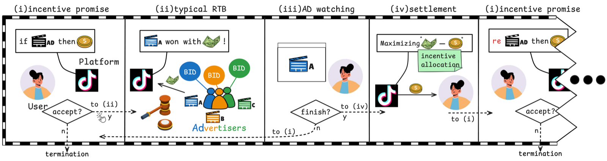
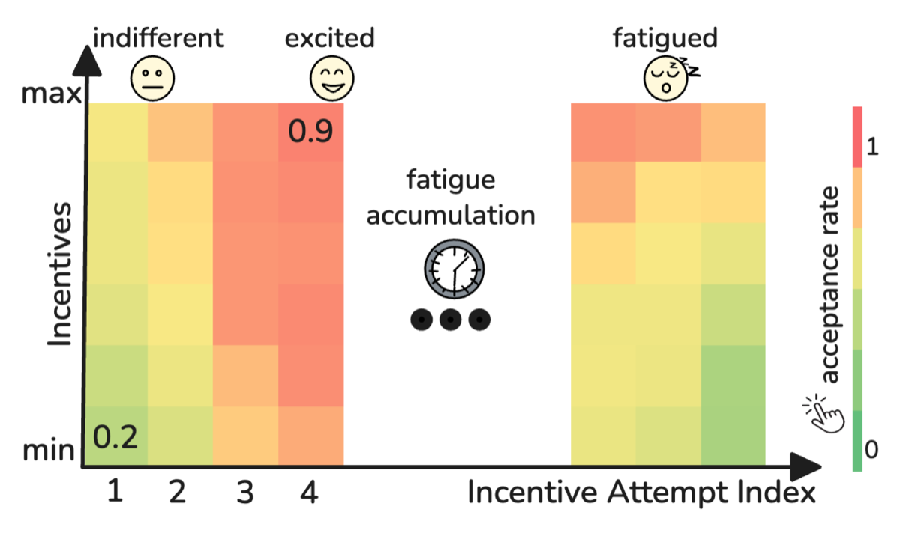
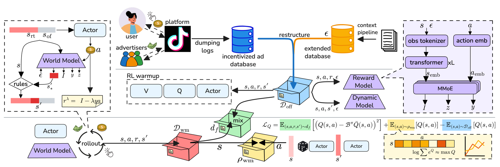
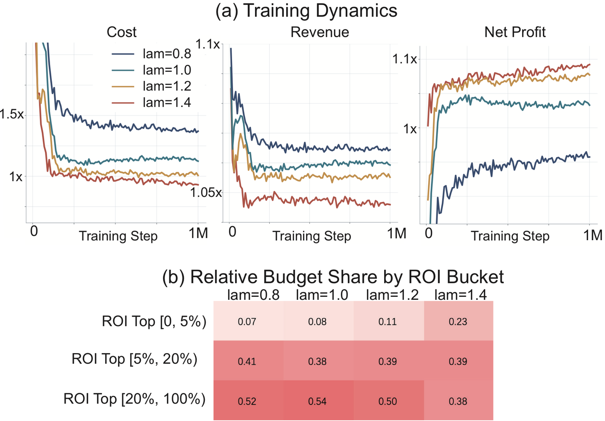

- 純利益 +7.96%オンライン A/B テスト（実験 C）で、世界モデルを加えた MB IQL が稼働中の TD3+BC を人あたり純利益で上回った（\(p<0.0001\)）。人あたり費用に有意な差はない。
- 純利益 −6.56%逆に MB IQL を世界モデルなしの IQL に戻した実験 D では、人あたり純利益が下がった（\(p<0.0001\)）。
- 評価の上乗せ 5% 対 50%同じ 8 GPU で、チェックポイントごとに評価したときの所要時間の増え方。CES は学習済みの評価器を使い回し、FQE は方策ごとに評価器を学習し直す（CES の初回学習の約 1 時間は含まない）。
支払いを約束してから広告収入が分かるので、額が低すぎれば収益化の機会を逃し、高すぎれば利益が削られる
インセンティブ広告（incentivized advertising）は、「広告を最後まで見たら 5 セントのボーナス」のように、広告の視聴に対して現金や仮想通貨をユーザーに払う広告商品である。図1のように、プラットフォームはまずユーザーに額 \(a\) を示して支払いを約束する。ユーザーが受け入れると、その機会は通常の RTB（リアルタイム入札）にかけられ、広告主から収入 \(I\) が入る。約束した \(a\) を払うのは、ユーザーが広告を最後まで見たときだけである。
論文は、受け入れから広告の表示、RTB の課金までがそろった配信の成功を「露出（exposure）」と呼ぶ。露出が起きなければその回は終わり、収入も支払いも生じない。額が低いとユーザーは断り、収益化の機会がなくなる。額が高いと露出は増えうるが、増えた支払いが増えた収入を上回ることがある。
近い研究は二つある。自動入札も逐次で予算を意識する問題だが、すでにある露出に入札するので、露出が生まれるかどうかは扱わない。ターゲティング販促（クーポンや補助金）はインセンティブを処置として反応と費用を比べるが、目的はもとからある需要の上での購入や継続で、広告で収益を得る流れは含まない。論文は、インセンティブで露出を生み、その後の RTB 収入を短い時間の逐次の動きとあわせて扱う設定は、公開文献ではまだ研究されていないと述べている。

今回のインセンティブがその後の数回の反応を変えるので、1 回ごとの予測ではなく短い窓の中の逐次の意思決定になる
ユーザーは毎回同じように反応するわけではない。図2は無作為に選んだ 100 人の実際の軌跡を集計したもので、最初のインセンティブの前は関心が薄く、受諾率は低い。一度受け入れると短い間クリックしやすくなり、インセンティブ疲れがたまると下がっていく。
インセンティブ広告では、短い時間窓の中で数回の機会が続けて示される。ある回で露出が起きたかどうかが、次の数回の反応の確率やリアルタイムの状態を変える。ユーザーが窓を離れるか、プラットフォーム側の回数の上限に達すると、その連続した過程は終わる。論文が扱う逐次性はこの短期の持ち越し効果であり、1 回ごとの反応予測とも、長期にわたるユーザーのライフサイクルの最適化とも異なる。

1 回の打診を 1 ステップとし、報酬は広告収入から λ 倍した支払い額を引いた値にする
1 回のセッションの中での連続したやりとりを 1 エピソード、1 回のインセンティブの打診を 1 ステップとする MDP を置く。状態 \(s_t\) は直近の行動やセッションの信号などのリアルタイムの特徴と、ユーザー属性や過去の広告への反応などの日・週単位の特徴からなる。方策は \(s_t\) だけを見て、インセンティブの絶対額 \(a_t\) を出力する。露出を \(z_t\in\{0,1\}\)、視聴完了と支払いを \(y_t\in\{0,1\}\)（\(y_t\le z_t\)）、その回の RTB 収入を \(I_t\ge 0\) とすると、報酬は次のとおりである。
露出しなければ \(I_t = 0\) なので、収入の項に \(z_t\) を掛ける必要はない。RTB の課金は視聴完了を待たずに行われる。\(\lambda\) は費用の重みで、\(\lambda\) の値ごとに費用への感度の異なる方策が決まる。
1 エピソードの打診の回数には製品側の上限 \(L_{\max}\) があり、論文の環境では 6〜20 回、およそ 1 時間にあたる。露出が起きなかった回では、製品側のクールダウンですぐには再開できないので、エピソードはそこで終わる。打診の間隔は一定でないため、割引には経過時間 \(\Delta\tau_t\) と半減期 \(T_{1/2}\) から決まる \(\gamma_t = 2^{-\Delta\tau_t/T_{1/2}}\) を使う（実験では半減期 15 分）。
露出・視聴完了・収入を予測する世界モデルで 1 ステップ先の遷移を作り、ログと混ぜて保守的に方策を学ぶ
世界モデルは報酬モデルと遷移モデルからなる（図3）。報酬モデルは 3 つの量を予測する。露出の確率 \(p(z=1\mid s,a,\epsilon)\)、露出したときの視聴完了の確率 \(p(y=1\mid z=1,s,a,\epsilon)\)、露出したときの収入の期待値 \(\mathbb{E}[I\mid z=1,s,a,\epsilon]\) である。1 ステップの期待報酬は「露出確率 × 条件付き収入 − \(\lambda\) × 露出確率 × 完了確率 × \(a\)」になる。遷移モデルはリアルタイムの特徴のうち変化する主な項目だけを予測し、変わらない項目と業務ルールを組み合わせて次の状態を作る。
\(\epsilon\) はログに後から結合したリクエスト単位の文脈で、各記録のタイムスタンプより後の情報を除き、決定の時点までに得られる情報だけを残している。\(\epsilon\) を使うのは世界モデルと後述の CES の予測だけで、方策は使わない。生成した未来のリクエストには \(\epsilon\) がないので、\(\epsilon\) がある環境では 1 ステップのロールアウトに限る。
方策の学習には、ログの遷移と世界モデルで作った遷移を比率 \(f\) で混ぜた分布 \(d_f\) を使う（合成遷移の割合は最初の 20 万ステップは 0 で、その後最大 0.5 まで増やす）。そのうえで CQL と同じ形の保守的な正則化を加え、世界モデルが作る候補の行動の Q 値を押し下げ、ログにある行動の Q 値を基準として保つ。これを TD3+BC と IQL に加えたものが MB TD3+BC と MB IQL で、もとの手法の価値関数と方策の目的はそのまま使う。MB CQL は COMBO の目的に同じ世界モデルを組み合わせたものである。

候補の方策はデータセットごとに 1 つ学習した評価器 CES に、テスト用ユーザーの実際のリクエストを入れて選ぶ
オフラインの開発では、アルゴリズム、\(\lambda\)、学習のチェックポイントの組み合わせで候補がいくつもできる。一方、オンライン A/B テストは流量、インセンティブの費用、業務上のリスクのために回数が限られる。そこで論文は方策の学習に使う世界モデルとは別に、反事実評価スコアラー（Counterfactual Evaluation Scorer、CES）をデータセットごとに 1 つ学習する。
ログはオンライン A/B テストと同じくユーザー単位で学習用とテスト用に分け、方策、世界モデル、CES はすべて学習用ユーザーだけで学ぶ。CES は世界モデルと同じ 3 つの量を独立に予測する。テスト用ユーザーの各リクエストについて、状態と文脈はそのままにして、ログの額を候補の方策の額 \(\pi(s)\) に置き換える。予測した収入と費用をユーザーごとに合計し、ユーザー間で平均したものが人あたり収入 \(\widehat R_{\mathrm{CES}}\) と人あたり費用 \(\widehat C_{\mathrm{CES}}\) である。
\(\lambda_{\mathrm{eval}} = 1\) とすると、これはオンラインの KPI と同じ単位の人あたり純利益になる。ただし CES はログにある固定のリクエストを条件にしており、候補の方策がその後の状態やリクエストの数を変える効果は入らない。論文は CES を、長期の価値を不偏に推定するものではなく、データが支える範囲で本番に出す前に方策を順位づける道具と位置づけている。
評価器を使い回せるので、チェックポイントごとの評価は方策と CES の推論と集計だけで済む。同じ 8 GPU での所要時間は、学習だけで 20 時間、CES での評価を加えて 21 時間、方策ごとに評価器を学習し直す FQE での評価を加えて 30 時間だった（CES の初回学習の約 1 時間は含まない）。
抖音の 3 つのログ環境で学び、総費用をそろえて方策どうしを比べた
DY-1（約 2 億件）と DY-2（約 4 億件）は抖音（Douyin）、DH（約 5,000 万件）は抖音火山版の記録で、配信の時期、対象ユーザー、行動方策が異なる。どの環境でも、基準の方策（DY-1 は TD3+BC、DY-2 は DESCN、DH は MAB）が出した額に、±50%（DH は ±70%）の一様なランダム探索をリクエスト単位で加えている。DH にはリクエスト文脈 \(\epsilon\) がない。ユーザーの約 10% をテスト用に回す。DY-2 はのちのオンライン実験と同じ環境なので、主な分析は DY-2 で行う。
方策の比較では総費用をそろえる。費用の水準を変えると LT や LTV といった長期の指標も変わりうるため、方策の差を配分の良し悪しだけに絞るためである。オフラインでは手法ごとに \(\lambda\) を 0.5 から 2.0 まで 0.1 刻みで変えて学習し、CES で見積もった人あたり費用がログの実績に最も近いものを選ぶ。オンラインでは、人あたり費用の差が 5% 水準で有意でないことを「費用が同等」とみなす。オフラインの各設定は 3 つのシードで学習し、100 万ステップ後の値を報告する。
以下の数値は arXiv v1（2026 年 8 月 28 日）の本文と表による。論文は ACM の会議用テンプレートで書かれているが、掲載先は arXiv のページにも本文にも書かれていない。
λ を大きくすると費用と収入は下がって純利益は上がり、予算は ROI の高いユーザーに移った
DY-2 で \(\lambda\) を変えて学習すると、\(\lambda\) が大きいほど費用と収入が下がり、この環境では純利益が上がった（図4(a)）。ROI で区切ったユーザーの区分ごとに予算の割合を見ると、\(\lambda\) が大きいほど ROI の高い区分に予算が移った（図4(b)）。論文は、\(\lambda\) は全体の費用の傾向と ROI への好みの両方を変え、入札額を一律に縮める係数として働くだけではないと述べている。
予算の上限そのものは方策の比較に入れず、運用の外側で扱う。付録の説明では、費用の管理は 3 層に分かれる。\(\lambda\) ごとの方策を学んで CES で選別する層、費用と ROI の条件で候補を選ぶ層、選んだ方策や \(\lambda\) を予算の上限、キャンペーンの周期、リアルタイムのリスクに合わせて配信で切り替える層である。

CES による評価では、3 つの環境と 3 つの手法のすべてで、世界モデルを加えると人あたり純利益が上がった
学習 100 万ステップ後の人あたり純利益を CES で推定して比べた（図5）。3 環境の平均では、世界モデルを加えると TD3+BC の +14.7% が +21.5% に、IQL の +16.3% が +22.0% に、CQL の +16.6% が +21.5% になり、差は 4.9〜6.9 ポイントだった。9 組すべてで世界モデルを加えた手法が上回った。付録の表では、模倣学習（BC、報酬の上位 10% だけを使う BC）と Decision Transformer は、どの環境でも世界モデルを加えた 3 手法より低かった。
保守的な Q 正則化を外すと（DY-2）、人あたり純利益は MB TD3+BC で +20.9% から −2.3% に、MB IQL で +20.8% から +3.5% に落ちた。逆にモデルフリーの TD3+BC と IQL にこの正則化を加えると、+14.1% から +12.6%、+15.9% から +14.0% とやや下がった。論文は、この正則化は世界モデルを加えた手法の性能を保つが、モデルフリーの手法の性能はやや下げるとまとめている。
順に行った 4 回のオンライン A/B テストで、世界モデルを加えると純利益が 7.96% 上がり、外すと 6.56% 下がった
DY-2 と同じ環境で、4 回の A/B テストを時期を重ねずに順に行った（図6）。各群は 1,000 万を超える端末 ID で、流量は 0.1% から 5%、10% と段階的に増やし、10% で測定した。値は同時に稼働している方策に対する相対変化で、4 回とも人あたり費用に有意な差はなかった。
- 実験 A（3 月） DESCN に対して TD3+BC で、人あたり純利益 +7.72%、収入 +6.55%。打診と露出の回数も 1.3〜1.4% 増えた。
- 実験 B（3〜4 月） TD3+BC に対して IQL で、純利益に有意な差はなかった（−0.92%）。打診と露出の回数は 1.1〜1.2% 減った。
- 実験 C（5〜6 月） TD3+BC に対して MB IQL で、純利益 +7.96%、収入 +6.80%。
- 実験 D（6 月） MB IQL を世界モデルなしの IQL に戻すと、純利益 −6.56%、収入 −4.77%。打診の回数は +21.81%、露出の回数は +23.68% と大きく増えた。
論文は実験 D の結果を、広告価値（eCPM）の低い多数のユーザーに費用が回り、露出は増えたが収入が減ったという説明と整合すると述べている。ただし、これは事後の解釈であり、誰に配るかは費用をそろえて純利益を最大にした結果として決まったもので、手で指定したものではないと断っている。4 回とも 7 日・30 日の LT と累積 LTV に有意な変化はなかった。全体の順序は DESCN < TD3+BC ≈ IQL < MB IQL で、CES での順位と一致した。同じ方策の組をあとから CES と FQE で評価した結果も、4 回の実験の純利益の符号をすべて再現した。
CES と世界モデルはログが支える範囲でしか信頼できず、方策の行動のずれは λ などで抑える必要がある
CES の予測を実際の結果と比べると、文脈 \(\epsilon\) を加えたとき、露出の AUC は 0.85 から 0.91 に、露出したときの収入の wMAPE は 0.83 から 0.32 に改善した。データの支える範囲がずれたときを調べるため、DY-2 の ±50% の探索幅のうち中心の ±20% だけ（DY-2in）で CES を学習した。範囲の中では露出の AUC が 0.92 だったが、範囲の外（DY-2out）では 0.78 に下がり、収入の wMAPE は 0.30 から 0.99 に悪化した。論文はここから、CES の順位は局所的にしか信頼できず、方策の行動のずれをハイパーパラメータで抑える必要があると結論している。
世界モデルも、\(\epsilon\) を使った 1 ステップの予測では露出の AUC が 0.87 だが、\(\epsilon\) を外すと 0.74、生成した状態を入力に戻す自己回帰のロールアウトでは 0.70 に下がった。収入の wMAPE は 0.39、0.84、1.41 と悪化した。1 ステップのロールアウトを使うのはこのためである。
論文は限界として次の点を挙げている。最適化の対象は短い窓の中の純利益で、長期のユーザー指標はオンラインで監視するだけである。CES は長期の反事実価値を推定する汎用の方法ではない。世界モデルと CES は入力と予測対象が大きく重なり、誤差が相関しうるので、方策の価値を過大に見積もるおそれがある。
処置は連続のインセンティブ額で、予算は λ を固定したラグランジュ型の報酬で扱い、上限そのものは運用の外側で守る
- 推定するもの 処置効果（アップリフト）は直接は推定しない。インセンティブ額を条件にした露出の確率、視聴完了の確率、露出したときの収入、変化する状態を世界モデルで予測し、それを使って価値関数と方策を学ぶ。評価には同じ 3 つの量を独立に予測する CES を使う。
- コストの扱い 費用は視聴を完了したときに払うインセンティブ額 \(y\,a\) で、露出と完了の確率を通して額に依存する。報酬 \(I - \lambda y a\) の \(\lambda\) が費用の重みになる。
- 処置の種類 連続（方策がインセンティブの絶対額を出力する）。
- 予算制約 方策の学習に明示的な制約は置かない。\(\lambda\) を固定したスカラー化で費用への感度を決め、比較ではログの実績費用に最も近くなる \(\lambda\) を選ぶ。予算の上限、キャンペーンの周期、リアルタイムのリスクは、選んだ方策や \(\lambda\) を切り替える配信側の層で扱う。
- データ 基準の方策の出力に ±50〜70% の一様なランダム探索を加えたログ（約 5,000 万〜4 億件）でオフラインに学び、オンライン A/B テストで確かめる。
1 回ごとのアップリフトモデルとの違いは、短い窓の中の持ち越しを扱う点にある。付録の参考実験では、半減期つきの割引で学んだ方策が、割引を 0 にした 1 ステップ版より CES での純利益が高かった（DY-2 で TD3+BC は +9.4% と +11.2%、IQL は +12.6% と +15.0%）。オンラインでも、TD3+BC はアップリフトモデルの DESCN（実験 A）に対して +7.72%、抖音火山版で MAB に対して +10.23% 純利益を上げた。
@misc{zhao2026learning,
title = {Learning to Allocate Incentives for Incentivized Advertising via Offline Model-Based Reinforcement Learning},
author = {Zhao, Zilin and Yang, Han and Yang, Tianpei and Huang, Fangsheng and Cui, Yanfei and Peng, Kan and Li, Yi and Zong, Yiming and Zhang, Hao and Xue, Yinsong},
year = {2026},
eprint = {2608.28065},
archivePrefix = {arXiv},
primaryClass = {cs.AI}
}